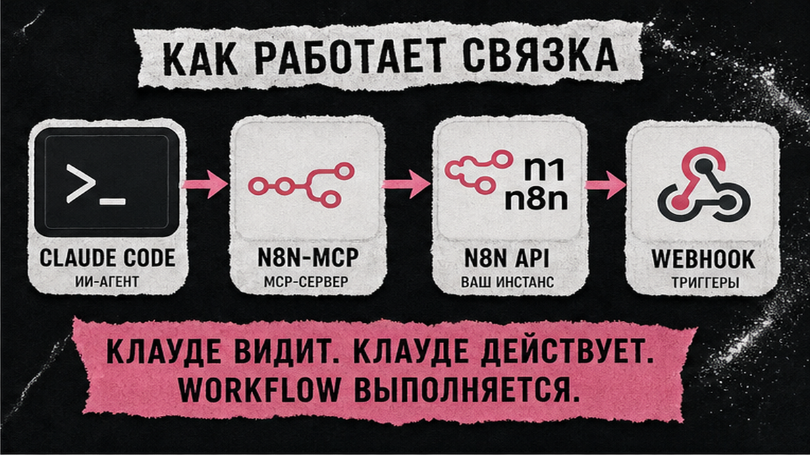
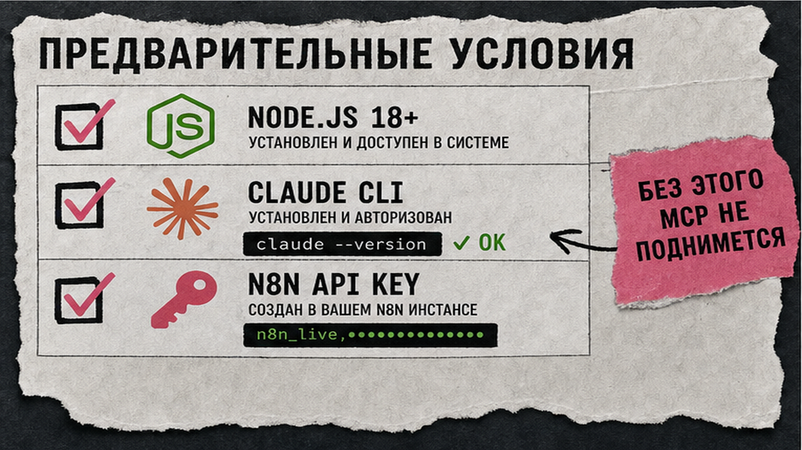
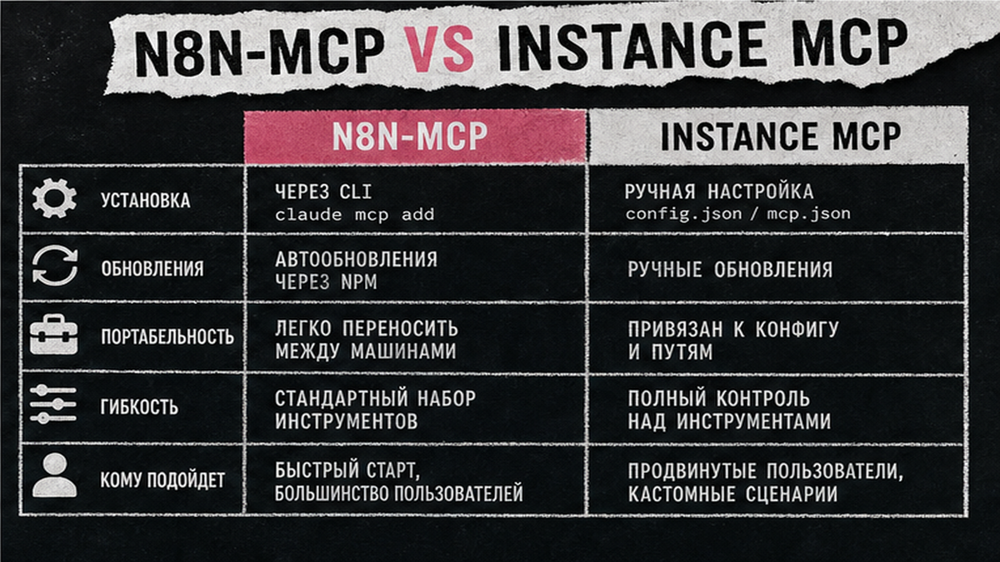

Claude Code умеет править код в терминале, но без n8n-mcp не создаст workflow в вашем n8n: агент не видит ноды, шаблоны и API инстанса. Настройка claude code n8n через команду claude mcp add занимает 20–40 минут. Ниже – API key, проверка /mcp, CLAUDE.md и первый сценарий webhook из текстового промпта. Вы активируете workflow и протестируете POST без ручного копирования JSON.
TL;DR / Быстрый инсайт: n8n-mcp в Claude Code – MCP-сервер (Model Context Protocol, "розетка" для внешних tools), который даёт агенту справочник по 1 800+ нод n8n и доступ к вашему инстансу по API key. Базовая команда: claude mcp add n8n-mcp с env MCP_MODE=stdio и npx n8n-mcp. С ключом n8n – создание workflow из терминала; без ключа – только документация и validate. Проверка: claude mcp list и /mcp в сессии.
MCP – протокол Anthropic: AI вызывает tools вместо "угадывания" синтаксиса нод. API n8n – доступ к workflow по ключу в Settings → n8n API. Логика как в MCP для Cursor, но конфиг через CLI. Фоновые сценарии – в гайде по n8n-агентам.

Claude Code собирает workflow текстом; n8n крутит их по webhook 24/7. n8n-mcp связывает стек: база 1 845 нод и 2 352 шаблона, с API key – деплой JSON в инстанс.
Схема связки:
Текстовый промпт в Claude Code → n8n-mcp (tools) → n8n API → workflow в UI → webhook test → фоновые executions
Делайте: Code для проектирования, n8n для runtime. Не делайте: путать n8n-mcp с встроенным Instance MCP n8n – это разные продукты (таблица ниже).

Перед n8n-mcp настройка требует три опоры: Node.js 18+ (чтобы npx запустил сервер), установленный Claude Code CLI и доступный n8n – Cloud или self-hosted на порту 5678.
Делайте: храните ключ в env или ~/.claude.json, не в Git. Не делайте: пробелы в конце URL – частая причина 401 и "тишины" в /mcp.

| Критерий | n8n-mcp (npm, czlonkowski) | Instance MCP (встроенный в n8n) |
|---|---|---|
| Кто поддерживает | Community (Romuald Członkowski) | n8n first-party |
| Установка | claude mcp add + npx n8n-mcp | Enable в n8n → URL в MCP-клиенте |
| Без API key | Доки нод + validate JSON | Нет доступа к инстансу |
| С API key | CRUD workflow в вашем n8n | CRUD + run exposed workflows (n8n 2.18.4+) |
| Лучше для | Claude Code CLI, шаблоны, глубокая база нод | Единый официальный мост к инстансу |
Итоговый вердикт: этот гайд ведёт через n8n-mcp под Claude Code в терминале. На Instance MCP переходите, если нужен только официальный доступ без community-пакета – см. блог n8n.
Делайте: doc-only smoke test без ключа, затем full config. Не делайте: смешивать env переменные двух MCP в одном проекте без таблицы выше.
claude mcp add регистрирует сервер. Флаг -- отделяет флаги Claude от npx n8n-mcp. Scope local → ~/.claude.json; --scope project → .mcp.json в корне репо.
Сначала doc-only (без деплоя в n8n):
Doc-only (без API key):
claude mcp add n8n-mcp -e MCP_MODE=stdio -e LOG_LEVEL=error -e DISABLE_CONSOLE_OUTPUT=true -- npx n8n-mcp
После claude mcp list и зелёного статуса удалите заглушку и добавьте полный доступ:
Full mode (с n8n API key):
claude mcp remove n8n-mcp
claude mcp add n8n-mcp -e MCP_MODE=stdio -e LOG_LEVEL=error -e DISABLE_CONSOLE_OUTPUT=true -e N8N_API_URL=http://localhost:5678 -e N8N_API_KEY=ваш_ключ -- npx n8n-mcp
Для Cloud – HTTPS URL инстанса. Опционально: /plugin install czlonkowski/n8n-skills.
Делайте: MCP_MODE=stdio и DISABLE_CONSOLE_OUTPUT=true всегда – иначе debug в stdout ломает протокол (JSON parsing error). Не делайте: коммитить .mcp.json с N8N_API_KEY в публичный Git.
Делайте: один тестовый tool-call перед сборкой production workflow. Не делайте: игнорировать предупреждение Claude Code при output MCP больше 10 000 tokens – сузьте prompt или настройте MAX_MCP_OUTPUT_TOKENS.
CLAUDE.md в корне проекта задаёт правила для каждой сессии. Минимум:
Делайте: human-in-the-loop для activate и delete. Не делайте: просить агента "сразу включить на прод" без вашего OK в чате.
Пример цепочки: Webhook → IF → Set → уведомление (Telegram, Slack или email). Скопируйте промпт в Claude Code после успешного /mcp:
Создай workflow в n8n: Webhook POST /test-lead, IF email содержит @, Set поля name и source=claude-code, затем Telegram или Slack с текстом "Новый лид". Сначала validate JSON, покажи схему нод, деплой только после моего подтверждения.
Агент вызовет tools: поиск нод, validate, create. Проверьте canvas в UI, затем activate.
Делайте: validate перед deploy. Не делайте: править боевой workflow без duplicate – рекомендация из README n8n-mcp.
Делайте: тест на копии workflow. Не делайте: публиковать webhook URL в открытых чатах без auth на ноде.
| Симптом | Причина | Действие |
|---|---|---|
| JSON parsing error | Нет MCP_MODE=stdio или лишний вывод в консоль | Добавьте DISABLE_CONSOLE_OUTPUT=true, переустановите MCP |
| 401 Unauthorized | Неверный API key или URL | Пересоздайте ключ, проверьте N8N_API_URL без пробелов |
| localhost:5678 недоступен | n8n не запущен или firewall | Запустите n8n, для Cloud – только HTTPS URL |
| ENOENT / npx | Нет Node.js в PATH | Установите Node 18+, перезапустите терминал |
Альтернатива npx – hosted dashboard.n8n-mcp.com (100 calls/day free tier).
Делайте: claude mcp remove и повторный add после смены env. Не делайте: подставлять /api/v1 в base URL для czlonkowski MCP.
Материал проверен: эксперт Артур Хорошев (CEO Maya AI, практик Make.com, n8n и MCP).
Достоверность данных: команды claude mcp add, env n8n-mcp и смежный кластер Вордстат ("n8n" – 37 115, "настройка mcp сервера" – 74, "cursor mcp" – 630) верифицированы по документации Anthropic, GitHub czlonkowski/n8n-mcp и Яндекс Вордстат на июнь 2026 года.
n8n-mcp – community-пакет через npx и claude mcp add. Instance MCP – официальный сервер в настройках n8n. В этом гайде путь через n8n-mcp; на Instance MCP – если нужен только first-party доступ.
Да для full mode: Settings → n8n API → Create API key. Без ключа – doc-only (validate и справочник). Ключ в env, не в Git.
claude mcp list, claude mcp get n8n-mcp, в сессии /mcp. Тест: "Перечисли workflow через n8n-mcp".
Добавьте MCP_MODE=stdio, LOG_LEVEL=error, DISABLE_CONSOLE_OUTPUT=true. claude mcp remove n8n-mcp и установите заново.
Запустите n8n локально, URL без лишнего path. Для Cloud – HTTPS base URL. Проверьте ключ без пробелов.
Да: doc-only – validate и справочник; JSON импортируете в UI. Для deploy из терминала нужен full mode с ключом.
Оба с MCP. Code – terminal-first и CI; Cursor – IDE. MCP в редакторе – гайд по Cursor.